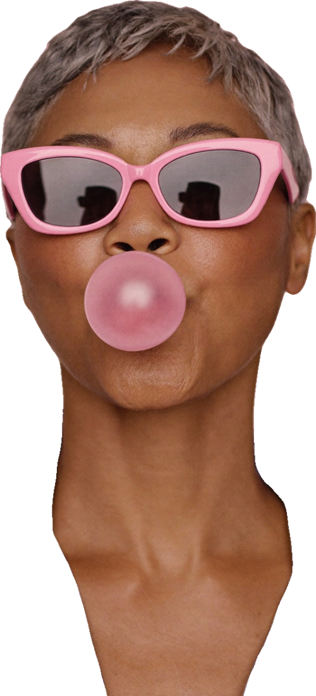

PAUSA · El manual de la menopausiaParte III · Compartir
10
mitos
Capítulo 10
Mitos y preguntas

Fig. 93 · No te lo tragues: pregunta por la fuente
45%
no conocía la diferencia entre perimenopausia y menopausia antes de vivirla.
Bonafide, citada por SWHR, feb. 2025.
La idea clave
Un mito repetido mil veces sigue siendo un mito. La evidencia cambió; la conversación también.
Muchas decisiones se toman con información de pasillo: lo que le pasó a una tía, un titular alarmante, un consejo de redes. Algunas ideas eran razonables hace veinte años; otras nunca tuvieron base.
Aquí pones diez mitos frente a la evidencia, con su fuente, y las preguntas que más se repiten. La meta no es decirte qué hacer: es que decidas con datos.
Los 10 mitos · págs. 52–53
01Es una enfermedad que hay que curar
02Antes de los 45 es demasiado pronto
03Hace falta un análisis para saberlo
04Ya no puedo quedar embarazada
05Los calores duran unos meses
06–10Hormonas, suplementos, ánimo, sexo y peso
Cuestionar un mito no es desconfiar de tu familia ni de tu médica: es pedir que las decisiones sobre tu cuerpo se tomen con la mejor información.